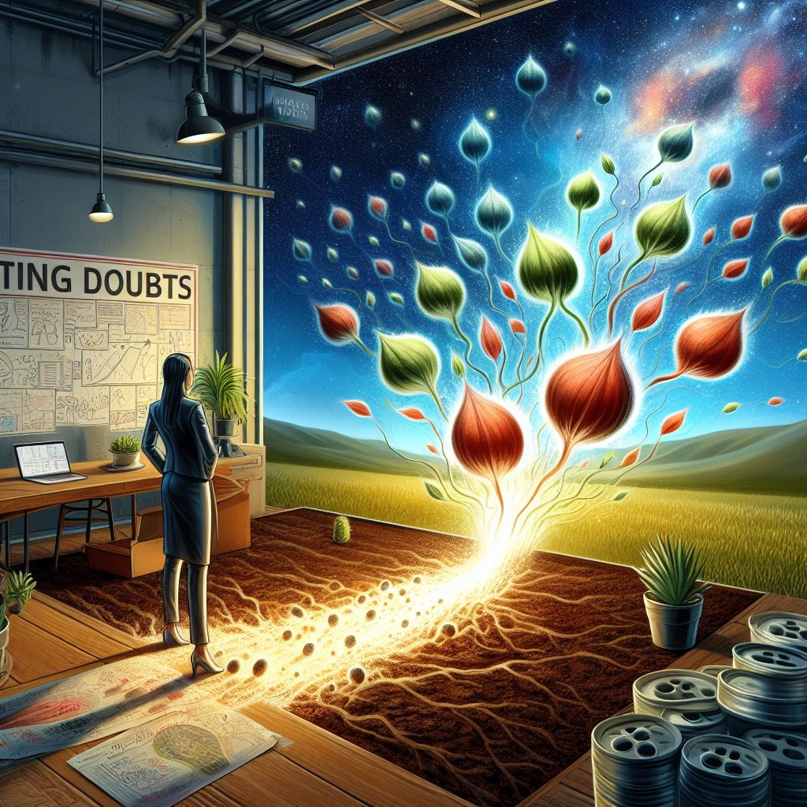

Coder le Changement : Les Étapes de Ma Réorientation Professionnelle
Publié le 07/12/2023 par Jennifer.
#ReconversionProfessionnelle
Introduction : À la découverte d’un nouveau chapitre
Bienvenue dans les premières pages d’un récit en constante évolution, où la réorientation professionnelle et l’exploration du codage se rencontrent pour créer un nouveau chapitre captivant de ma vie. Je suis Jennifer, une passionnée de l’optique-lunetterie depuis 18 ans, et aujourd’hui, je me tiens à la croisée des chemins, prête à plonger dans des horizons inexplorés.
Dans cette première plongée, je partage les premiers contours de ma quête, amorcée par un regard rétrospectif sur mon parcours dans l’optique-lunetterie. Un confort ébranlé, la quête de sens et l’appel du numérique ont tracé les contours de ma motivation à entreprendre une réorientation professionnelle et à m’immerger dans l’univers du codage.
Suivez-moi à travers les premiers pas dans ce monde du codage, où chaque ligne de code devient une opportunité d’apprentissage et d’exploration. Découvrez comment le blog “Apprendre, se réorienter” émerge comme un journal de bord numérique et un terrain d’expérimentation en constante évolution, reflétant ainsi la croissance de mes compétences en codage.
Ensemble, affrontons les doutes qui accompagnent cette transition, explorons les possibilités à venir, et plongeons dans l’inconnu de ma réorientation professionnelle. Chaque article représentera une étape sincère de cette aventure palpitante, où les doutes ne sont pas des obstacles, mais des catalyseurs pour une exploration continue.
Prête à partager cette aventure avec vous, je vous convie à découvrir les premières lignes d’un nouveau chapitre, là où la simplicité actuelle préfigure une complexité et une créativité à venir.
Bienvenue dans “Apprendre, se réorienter” – un voyage vers l’inconnu.
Partie 1 : Un Regard en Arrière et un Pas vers l'Inconnu
Pendant près de deux décennies, mon parcours professionnel s’est entrelacé avec l’univers captivant de l’optique-lunetterie, une passion qui a marqué mon histoire. Toutefois, les récentes mutations de cette industrie, sous l’influence de changements tels que l’avènement des réseaux de complémentaires et la loi 100% Santé, ont profondément altéré la nature de notre rôle. D’une position de “professionnels de la santé visuelle”, nous sommes devenus de simples “vendeurs de lunettes”. Cette transformation a suscité en moi une remise en question profonde.
Ébranlement d’un Confort Acquis
Entre perplexité et malaise, cette métamorphose me heurte, particulièrement face à l’aspect de plus en plus commercial du métier. Vendre des produits qui ne répondent pas toujours aux besoins réels des clients va à l’encontre de ma conviction profonde de fournir des solutions authentiquement nécessaires. La pression pour promouvoir des traitements superflus semble en désaccord avec ma nature fondamentale, éveillant en moi une honnêteté peut-être trop franche pour prospérer dans ce nouvel environnement.
Mon malaise s’installe dans cet univers commercial aux horaires interminables, où l’éthique professionnelle semble céder devant des marges bénéficiaires accrues. La décision est prise : je souhaite laisser derrière moi cet aspect commercial qui contredit mes valeurs et ma personnalité.
À la Recherche d’une Signification Profonde
Cette introspection m’oriente vers des voies alternatives, des sphères où l’éthique prévaut sur la simple vente. Déterminer par où commencer dans ma quête d’une nouvelle voie professionnelle devient l’interrogation centrale. La transition vers un univers différent se dessine comme une réponse, même si le chemin reste pour l’instant nébuleux.
L’Attrait du Numérique : Un Compagnonnage Silencieux
En parallèle, ma passion pour le numérique et l’informatique a toujours agi en filigrane dans ma vie quotidienne, de simples raccourcis sur mon iPhone à la création d’un médiacenter pour ma télévision, en passant par l’assemblage d’un mini-ordinateur sous Linux avec un Raspberry Pi.
Pour l’instant, le codage, à travers ce blog, se présente comme un outil pour donner forme à mes questionnements. Il devient le moyen de matérialiser mes réflexions et d’explorer les méandres de mes incertitudes : par où commencer dans ce nouveau chapitre de ma vie ?
Illuminer l’Inconnu par le Codage et le Blogging
Ce blog, à l’instar du codage, se profile comme un compagnon de voyage essentiel. Un journal intime documentant ma réorientation, où chaque ligne de code tracée éclaire le chemin incertain de l’inconnu. Bien que la destination finale reste voilée de doutes, une certitude persiste : ce parcours sera authentique, chaque étape capturée fidèlement dans ces pages.
Premières Lignes d’une Épopée Nouvelle
Ceci marque les premières lignes d’un nouveau chapitre, situé à la croisée de la remise en question professionnelle et de l’apprentissage du codage. Bienvenue dans cette exploration où la réorientation devient une toile sur laquelle je dessine activement mon avenir.
Partie 2 : Les Premiers Pas dans le Monde du Codage
Mes premiers pas dans le vaste monde du codage, en particulier avec le langage “HTML”, se sont révélés bien plus accessibles que je ne l’avais envisagé. Ce nouveau territoire, initialement intimidant, a rapidement dévoilé sa logique, rendant l’apprentissage plus abordable que prévu.
Un Projet, une Passion, un Journal de Bord Numérique
C’est ainsi que je me suis plongée dans l’art du codage, suivant le mantra bien connu des développeurs : “Pour apprendre à coder, il faut coder.” Pour moi, cela impliquait de donner une forme concrète à ce périple de réorientation professionnelle, de le transformer en un journal de bord numérique. Le blog devenait ainsi non seulement un moyen de partager mes questionnements, mais aussi un terrain d’apprentissage pratique.
Le Blog : Un Terrain d’Expérimentation en Évolution
Le blog, en tant que projet en perpétuelle mutation, reflétera l’évolution de mes compétences en codage. L’amélioration du design s’avérera inévitable, et j’envisage d’explorer des éléments plus avancés tels que des animations. “Apprendre, se réorienter” ne se limitera pas à une simple reconversion professionnelle. Il deviendra un espace où différentes catégories d’articles cohabiteront, capturant l’essence même de l’apprentissage continu.
Ainsi, mes premiers pas dans l’univers du codage s’ouvrent comme une porte vers l’inconnu, où chaque ligne de code représente une opportunité d’apprendre et d’expérimenter. Le futur du blog s’annonce prometteur, en symbiose avec ma propre croissance en tant que codeuse débutante et exploratrice de nouvelles voies professionnelles. C’est avec enthousiasme que je m’apprête à écrire ce nouveau chapitre, là où la simplicité actuelle laisse présager une complexité et une créativité à venir.
Partie 3 : Surmonter les Doutes, Explorer les Possibilités
Les premiers échos de ma décision de quitter l’optique-lunetterie ont suscité des réactions variées. Mes anciens collègues étaient étonnés, tandis que mon entourage s’interrogeait : “Ton métier est génial et porteur pour l’avenir, pourquoi changer ?” Cette diversité de réactions souligne la méconnaissance de l’intérieur de ma quête, mais également la nécessité d’explorer d’autres horizons.
Affronter le Défi de l’Inconnu
Sortir de ma zone de confort représente un défi considérable. Confronter l’immensité des possibilités, explorer des horizons inexplorés, et envisager des voies professionnelles nouvelles et diverses : tout cela tisse une toile complexe qui attend d’être explorée.
L’Appel à l’Aide et l’Accompagnement Nouveau
Pour relever ce défi complexe, j’ai sollicité l’aide de Pôle Emploi, bénéficiant de l’assistance de Solerys. Cet accompagnement, que je viens de débuter, deviendra une composante essentielle de ma trajectoire de réorientation. Les prochains articles du blog seront les témoins de cette collaboration et des étapes franchies.
Les Leçons de l’Optique-Lunetterie
L’expérience dans l’optique-lunetterie a agi comme une lampe éclairant mes aspirations et mes préférences. Elle a révélé ce que j’aime, ce que je n’aime pas, et les conditions nécessaires à mon épanouissement professionnel. Cette introspection guide mes pas dans la recherche d’une nouvelle voie, mais elle est encore incomplète.
Les Doutes en Temps Réel
Le doute persiste comme une constante, et je n’affirme pas l’avoir surmonté. Au contraire, je me trouve au cœur de ces incertitudes, explorant chaque nuance de questionnement avec une curiosité mêlée d’appréhension.
Pas de Fusion Imminente : Codage et Réorientation
À ce stade, la fusion entre le codage et ma réorientation professionnelle n’est pas dans mes plans immédiats. Les deux chemins coexistent, se croiseront peut-être dans le futur, mais pour l’instant, chaque trajet suit son cours.
L’Exploration Continue
Cette partie du voyage représente une exploration sans filet, avec ses doutes, ses questionnements, mais aussi ses moments de révélation. L’avenir se dessinera au fil des rencontres avec Solerys, et chaque pas vers l’inconnu sera documenté avec honnêteté sur le blog “Apprendre, se réorienter”. La réorientation se transforme ainsi en une aventure palpitante, pleine d’interrogations mais aussi d’opportunités à découvrir.
Partie 4 : À la Croisée des Chemins : Un Départ, Non une Destination
Mon premier contact avec Solerys fut une initiation, une plongée dans l’inconnu. Plutôt que de fournir des réponses immédiates, cette rencontre a intensifié mes questionnements. Je me tiens à la croisée des chemins, non pas à une destination fixe, mais à un point de départ où la route de la réorientation professionnelle s’étend devant moi, prête à être explorée.
Affronter l’Incertitude comme Défi Principal
L’incertitude persistante se révèle être le défi principal de cette étape. Face à une multitude de possibilités, je me retrouve confrontée à une question simple mais vertigineuse : “Par où commencer ?” Ce défi, bien que stimulant, souligne la nécessité d’une exploration méthodique et réfléchie.
Les Doutes comme Catalyseurs
Plutôt que de considérer les doutes comme des obstacles, je les envisage comme des catalyseurs. Ils représentent le terreau fertile où germent les graines des idées futures. Chaque question sans réponse est une invitation à plonger plus profondément dans ma propre quête, une exploration qui sera partagée au fil des articles à venir.
Intégrer la Patience dans l’Évolution du Blog
Cette période d’incertitude influencera également l’évolution du blog. La patience devient une alliée précieuse dans la construction du contenu, dans l’attente des réponses, et dans la création d’un espace où les lecteurs peuvent partager le voyage d’une exploratrice incertaine.
La Promesse de l’Amélioration Continue
Le blog “Apprendre, se réorienter” continuera de se développer, tant en termes de contenu que d’apparence. Chaque avancée, chaque découverte au cours de mes rendez-vous avec Solerys et au-delà, sera documentée. L’amélioration continue devient une promesse, non seulement pour moi-même mais aussi pour ceux qui partagent ce voyage.
L’Aventure Continue : Rendez-vous à Venir
Ainsi, la quatrième partie de ce récit ne marque pas une fin, mais plutôt une transition. L’aventure se poursuit avec la certitude que chaque rendez-vous à venir avec Solerys dévoilera de nouvelles possibilités, éclairera des choix et enrichira le blog de réflexions plus profondes et de perspectives inattendues. L’exploration ne fait que commencer, et chaque étape, aussi incertaine soit-elle, contribuera à la trame de cette histoire en constante évolution.
Conclusion : Vers de Nouveaux Horizons
Ces premières pages du blog “Apprendre, se réorienter” marquent l’amorce d’une aventure fascinante à la croisée des chemins. Ce récit, entrelaçant réorientation professionnelle et apprentissage du codage, est une exploration sans filet, où chaque ligne de code et chaque interrogation contribuent à la trame d’une histoire en constante évolution.
Les défis de l’inconnu, les doutes comme catalyseurs, l’appel à l’aide et l’introspection profonde ont donné naissance à un journal numérique en perpétuelle transformation. Le blog, bien plus qu’une plateforme, devient le reflet de ma croissance en tant que codeuse débutante et exploratrice de nouvelles voies professionnelles.
Le chemin vers la réorientation n’est pas dépourvu d’incertitudes, mais plutôt pavé d’opportunités. L’accompagnement de Solerys, les réflexions sur mon expérience dans l’optique-lunetterie et les premiers pas dans le monde du codage sont autant de chapitres qui se déploient avec la promesse d’une amélioration continue.
Alors que je me tiens à la croisée des chemins, prête à explorer de nouveaux horizons, je vous invite à suivre cette aventure. Chaque rendez-vous à venir avec Solerys, chaque question sans réponse, chaque moment de révélation seront capturés avec authenticité sur ces pages virtuelles.
“Apprendre, se réorienter” n’est pas simplement un blog ; c’est un voyage vers l’inconnu, où la patience, la curiosité et l’honnêteté guident chaque étape. Merci de faire partie de cette exploration, où l’avenir est prometteur et chaque découverte est une invitation à la créativité et à la croissance.
Rendez-vous au prochain chapitre, où de nouveaux horizons attendent d’être explorés.
Soyez de la Partie ! Suivez-moi sur les réseaux !”
Cher explorateur de l’inconnu, ne manquez aucune étape de cette aventure passionnante ! Suivez-moi dès maintenant pour recevoir en exclusivité les prochains chapitres de mon parcours, des conseils en codage, et des réflexions sur la réorientation professionnelle. Ensemble, construisons une communauté vibrante et inspirante autour de la croissance personnelle et du changement. Cliquez ci-dessous pour faire partie de cette exploration enrichissante !